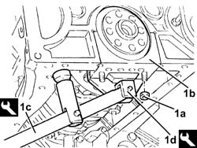
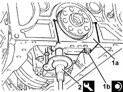
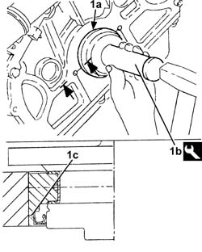
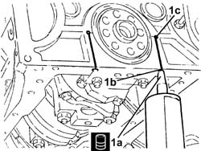

1020D50 CRANK SHAFT REAR MOUNT - APPLY SILICONE TO MATING SURFACES WITH CRANK CASE SUMP AND FLYWHEEL REMOVED
- Path
- Procedures > 10 ENGINE UNIT > 1020 CRANKCASE SUMP AND COVERS > 1020D OIL SEALS ON CRANK SHAFT > 1020D50 CRANK SHAFT REAR MOUNT - APPLY SILICONE TO MATING SURFACES WITH CRANK CASE SUMP AND FLYWHEEL REMOVED
- Kind
- repair procedure (removal / refitting; the operation number is the code)
- Applies to
- engines: 3.2 V6; all production periods
- Interactive page
- https://sloeber94.github.io/elrnDB-aGt/en/#/125000931
Applies to: engines: 3.2 V6; all production periods
 Removing
Removing
 Refitting
Refitting1. Undo the nuts (1a) and remove the rear main bearing cap (1b) using the tools (1c) and (1d).
 | Name | Country |
|---|---|---|
1c | Lever | 1.821.006.001 |
| Name | Country |
|---|---|---|
1d | Extractor | 1.821.006.002 |
Remove the main bearing shell.

Applies to: engines: 3.2 V6; all production periods
Remove the crankshaft rear oil seal.
Applies to: engines: 3.2 V6; all production periods
Refitting
RemovingThoroughly remove the sealant residues from the rear bearing cap seat, the small holes and the contact surfaces with the oil sump.
Thoroughly remove all traces of engine oil using heptane or a similar solvent.
1. Place the rear bearing cap (1a), complete with half-bearing, back in its housing and secure it tightening the nuts (1b) to the recommended torque.
 | Fastening | Component | Ø | Value (daNm) |
|---|---|---|---|---|
1b | Nut | BIG END BEARING CAPS | M12 | 2.4 ÷ 2.6 + 77? ÷ 81? |
2. Use the tool for angular tightening of the main bearing cap bolts.
| Name | Country |
|---|---|---|
2 | Protractor | 1.860.942.000 |

Applies to: engines: 3.2 V6; all production periods
1. Refit a new rear crankshaft front cover oil seal (1a) using the tool (1b).
| Name | Country |
|---|---|---|
1b | Fitting tool | 1.821.250.000 |

Applies to: engines: 3.2 V6; all production periods
1. Apply the recommended sealant (1a) through the openings (1b) and check that it comes about 5 mm out of the openings (1c).
 | Type | Component | Name | Qty. |
|---|---|---|---|---|
1a | Sealant | ENGINE REAR MOUNT GASKETS | LOCTITE 5900 | - |

Applies to: engines: 3.2 V6; all production periods
.